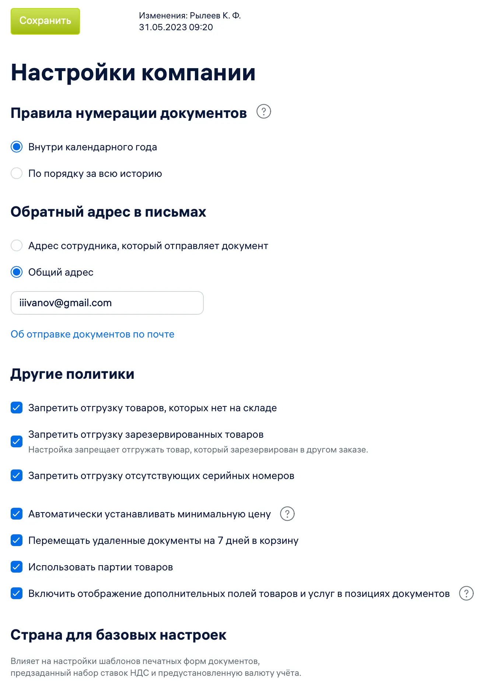

Чтобы задать общие настройки сервиса:
- Перейдите в раздел Меню пользователя → Настройки → Настройки компании.
- Выберите необходимые настройки:
- Правила нумерации документов — нумерацию можно вести по порядку начиная с начала года или за всю историю.
- Обратный адрес в письмах — адрес, который автоматически подставляется в письма клиентам при ответе на сообщения, отправленные через сервис. Это может быть адрес сотрудника, который отправил письмо, или общий адрес компании.
- Лимиты на отправку сообщений: Для всего аккаунта — не более 200 сообщений за час и 100 сообщений за 5 минут. Для пользователя — не более 50 сообщений за 5 минут и 100 сообщений за час. На Бесплатном и Пробном тарифах — не более 5 писем в час для всего аккаунта.
- Запретить отгрузку товаров, которых нет на складе — если настройка выбрана, при отсутствии товара в остатках его нельзя продать.
- Запретить отгрузку зарезервированных товаров — если настройка выбрана, зарезервированный товар нельзя отгрузить по другому Заказу. Настройка доступна, если выбрано Запретить отгрузку товаров, которых нет на складе.
- Запретить отгрузку отсутствующих серийных номеров — если настройка выбрана, нельзя отгрузить товар с серийным номером, которого нет на складе. Подробнее см. Запрет отгрузки отсутствующих серийных номеров.
- Автоматически устанавливать минимальную цену — если настройка выбрана, при сохранении документов продажи с ценами меньше минимальных (указаны в карточках товаров) они автоматически увеличиваются до минимальных.
- Перемещать удаленные документы на 7 дней в корзину — если настройка выбрана, удаленные документы будут на 7 дней помещаться в корзину и только потом окончательно стираться.
- Использовать партии товаров — если настройка выбрана, доступен учет по партиям и срокам годности для конкретных товаров или групп товаров. Это позволяет отгружать товар определенной партии, продавать товар с более ранним сроком годности в первую очередь и списывать просроченный товар.
- Включить отображение дополнительных полей товаров и услуг в позициях документов — если настройка выбрана, в Заказе покупателя (новый дизайн) отображаются дополнительные поля для позиций товаров и услуг. Информация из дополнительных полей доступна независимо от настроек доступа пользователя к этим товарам и услугам.

- Нажмите на кнопку Сохранить.